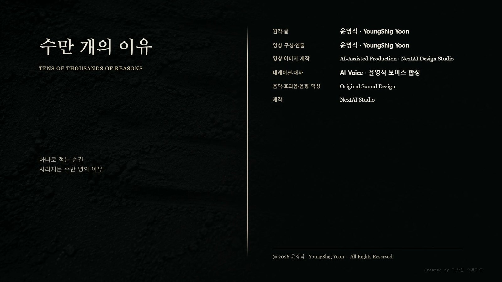

一. 남은 시간
함대는 물러났고 좌표는 가져갔다.
라스는 그것이 얼마짜리 시간인지 계산하려다 그만두었다. 계산하려면 저쪽의 기준 재수립 속도를 알아야 하는데, 그는 더 이상 저쪽의 계통에 접속할 수 없었다.
정착지는 사흘째 옮기는 중이었다. 위쪽 치우 생존자들이 표지를 뽑지 않고 그대로 두었다. 표지는 옮기는 것이 아니라 남기는 것이라고 했다. 아래 마을 사람들은 무너진 계곡을 피해 능선을 따라 짐을 날랐다.
라스의 외골격은 갈라진 채였다. 고치려면 저장고의 정렬층을 다시 세워야 했고, 정렬층을 세우면 위치가 다시 잡힌다. 그는 그냥 두었다.
아라가 관측대 자리에 앉아 있었다. 관측대는 없어졌다. 자리만 남았다.
아라: "네가 계속 아래를 보고 있어."
라스: "경로가 아래로 갔어."
아라: "무슨 경로."
라스: "그 아이가 지나간 경로."
아라가 고개를 들었다.
라스: "네 감응망이 내 정렬층을 지났어. 그런데 지나간 자리가 내가 아는 자리가 아니야."
二. 내려가는 길
입구는 무너진 물길 아래에 있었다.
열일곱 해 동안 라스는 이 지역의 지하 광물층을 세 번 측량했다. 세 번 다 이 구조물을 지나쳤다. 광물층 신호와 구분되지 않았기 때문이다.
내려가는 통로는 곡선이 없었다. 직선으로 내려가다가 각을 꺾고 다시 직선으로 내려갔다. 르네의 방식이었다.
라스는 그것이 마음에 걸렸다.
르네가 지구에 세운 것은 저장고 여섯 채와 관측대 하나뿐이었다. 전부 그가 도면을 그렸고 전부 지상에 있었다.
통로 벽에 손을 댔다. 마감이 거칠지 않았다. 손바닥에 걸리는 것이 없었다. 이 정도로 마감하려면 도착층까지 완성된 구조물이어야 했다.
라스: "누가 세운 거야."
아무도 대답하지 않았다. 그는 혼잣말을 하지 않는 사람이었다. 그 사실을 스스로 알아차리고 잠깐 멈췄다.
통로 끝에서 공간이 열렸다.
세 겹이었다.
바깥 정렬층, 중간 하중층, 그리고 아무것도 없어야 할 안쪽 도착층. 말데크의 관문과 같은 구조였고, 지구의 유적과 같은 구조였고, 라스가 평생 그려 온 구조였다.
다만 이 구조물은 도착을 위한 것이 아니었다.
바깥 정렬층 벽면이 전부 새겨져 있었다.
三. 벽
라스는 손으로 읽었다.
르네의 규격선은 눈으로 읽는 것이 아니다. 선의 깊이와 간격과 교차 각도가 값이다. 손끝이 지나가면서 값이 들어온다. 읽는 것이 아니라 재는 것이다.
첫 층은 좌표계였다. 말데크 기준. 오래된 것이다.
두 번째 층은 수신 기록이었다. 무엇을 받았는지가 아니라 몇 개를 받았는지만 새겨져 있었다. 숫자가 컸다. 라스는 그 자리를 두 번 지나갔다.
세 번째 층에 명령이 있었다.
르네의 명령은 문장이 아니다. 방향이다. 정렬층에 새겨진 하나의 축, 그리고 그 축을 따라 배치된 하중 계산. 그것을 읽으면 무엇을 해야 하는지가 아니라 어디로 가야 하는지가 나온다.
이 벽에 새겨진 축은 하나였다.
라스는 손끝으로 그 축을 끝까지 따라갔다. 벽을 반 바퀴 돌았다. 축은 갈라지지 않았고 흔들리지 않았고 예외를 두지 않았다.
값을 말로 옮기면 한 줄이었다.
적은 이쪽에 있다.
라스는 손을 뗐다.
이 명령이 말데크 전쟁의 시작이었다. 화성 전쟁평의회가 내린 것이 아니었다. 평의회는 이 벽을 근거로 결정했을 것이다. 근거가 먼저 있고 결정이 나중에 있다.
그러면 이 벽에 새긴 자는 누구인가.
두 번째 층으로 돌아갔다. 수신 기록. 몇 개를 받았는지만 적힌 층.
숫자를 다시 셌다.
四. 따라 내려온 아이
윤서가 통로 끝에 서 있었다.
아라가 아이의 어깨를 잡고 있었다. 잡고 있는 것이 아니라 붙잡고 있었다. 놓으면 안 되는 손의 모양이었다.
라스: "왜 데려왔어."
아라: "안 데려오면 혼자 왔을 거야."
윤서는 사흘 전부터 잠을 자지 않았다. 감응망에서 나온 뒤로 방향이 완전히 사라지지 않았다. 아이는 그것을 아프다고 말하지 않고 시끄럽다고 말했다.
아라: "이 아래에서 오는 거야. 아이가 사흘 동안 들은 게."
라스는 벽을 가리켰다.
라스: "여기 새겨진 건 하나야. 축이 하나고 방향이 하나야. 시끄러울 게 없어."
아라: "그건 네가 읽은 거고."
윤서가 벽 쪽으로 한 걸음 갔다.
아라가 어깨를 놓지 않았다.
윤서: "괜찮아요."
아라: "안 괜찮아."
윤서: "저번엔 안에 들어갔잖아요. 이번엔 밖에서 들을 거예요."
열두 살이 할 수 있는 구분은 아니었다. 아이는 사흘 동안 그것을 배웠다.
五. 수만 개
윤서가 벽에 손을 댔다.
라스가 손으로 읽은 곳과 같은 자리였다. 두 번째 층. 수신 기록이 새겨진 곳.
아이는 잠깐 아무 말도 하지 않았다.
그리고 말하기 시작했다.
윤서: "물이 차오르니까 위층으로 가라고."
윤서: "아이를 먼저 보내라고."
윤서: "세 번째 통로는 무너졌다고."
윤서: "남쪽 문이 아직 열린다고."
윤서: "신발을 신고 나가라고."
윤서: "물이 아직 안 들어온 방이 있다고."
윤서: "위층에 사람이 너무 많다고."
윤서: "나를 두고 가라고."
윤서: "어머니가 아직 안에 있다고."
윤서: "아버지가 곧 온다고."
윤서: "여기서 기다리라고."
윤서: "기다리지 말라고."
두 문장이 붙어 나왔다. 아이는 그것을 이상하게 여기지 않았다.
윤서: "지금 뛰면 된다고."
윤서: "뛰지 말라고. 넘어진다고."
윤서: "손을 놓지 말라고."
윤서: "이 방향은 아니라고."
윤서: "두고 온 게 있다고."
윤서: "아직 늦지 않았다고."
윤서: "늦었다고."
라스가 벽에서 손을 뗐다.
윤서: "우리 여기 있다고."
윤서가 숨을 쉬었다.
같은 말은 하나도 없었다. 하나가 끝나면 다른 하나가 왔고, 그것도 끝나면 또 다른 하나가 왔다. 아이의 목소리는 커지지 않았다. 다만 숨이 짧아졌다.
서로 반대되는 말이 나란히 있었다. 기다리라는 말과 기다리지 말라는 말이 같은 무게로 벽에 들어와 있었다.
아라가 아이의 어깨를 잡은 손에 힘을 주었다.
아라: "몇 개야."
윤서: "안 세져요."
라스는 두 번째 층의 숫자를 이미 세어 두었다.
수만 개였다.
그는 그 숫자가 무엇의 개수인지 몰랐다. 수신 기록이니 신호의 개수라고 생각했다. 르네의 계기는 신호를 셀 뿐 내용을 저장하지 않는다.
그런데 아이는 내용을 듣고 있었다.
라스: "저 아래층에 뭐라고 새겨져 있는지 말해 봐."
윤서: "안 새겨져 있어요."
라스: "새겨져 있어. 내가 읽었어."
윤서: "그건 아저씨가 읽은 거고요."
윤서가 손을 뗐다. 숨을 크게 쉬었다.
윤서: "여기 있는 사람들은 아무도 그렇게 말 안 했어요."
라스: "어떻게."
윤서: "적은 이쪽에 있다고요. 아무도 그렇게 말 안 했어요."
라스는 벽을 보았다.
수만 개가 들어왔고 하나가 새겨졌다.
치우의 감응은 방향을 여럿 가진다. 이쪽은 위험하다, 저쪽은 아직 괜찮다, 여기서는 늦었다. 각자 자기 자리에서 자기가 아는 방향을 보낸다. 수만 명이면 수만 개다.
르네의 정렬층은 축을 하나만 새긴다.
여럿을 하나로 새기려면 버려야 한다. 버리는 방식은 규격이 정한다. 규격은 가장 많이 겹치는 방향을 남기고 나머지를 오차로 처리한다.
수만 개의 서로 다른 위험 신호에서 가장 많이 겹친 방향이 하나 있었다. 그 방향은 위험이 오는 쪽이었다.
벽은 그것을 이렇게 새겼다.
적은 이쪽에 있다.
아무도 그렇게 말하지 않았다.
六. 내 손
라스는 바깥 정렬층으로 돌아갔다.
규격선을 손끝으로 다시 읽었다. 이번에는 값이 아니라 형태를 읽었다. 선이 꺾이는 각도, 교차점의 처리, 반복 구간의 간격.
르네의 규격은 하나가 아니다. 세대마다 다르고 설계자마다 다르다. 같은 값을 새겨도 손이 다르면 선이 다르다.
이 선은 그가 아는 선이었다.
관문을 만들 때 쓰던 방식이었다. 교차점에서 한 선을 끊고 다른 선을 지나가게 한다. 끊는 쪽을 항상 아래로 둔다. 그렇게 하면 나중에 어느 쪽이 기준인지 손으로 알 수 있다.
그가 열아홉에 정한 방식이었다. 누가 가르쳐 준 것이 아니었다.
라스: "이건 내 규격이야."
아라: "네가 세웠어?"
라스: "아니."
아라: "그럼."
라스: "내가 만든 방식으로 누가 세웠어."
그는 무기를 만든 적이 없었다. 관문을 만들었고 도면을 그렸고 규격을 정했다. 그 규격은 도착을 위한 것이었다.
규격은 무엇을 새길지 정하지 않는다. 어떻게 새길지만 정한다.
어떻게 새길지가 정해지면 무엇을 새길 수 있는지도 정해진다.
하나만 새길 수 있는 문법으로는 하나밖에 못 적는다.
라스는 벽에 손을 대고 서 있었다. 갈라진 외골격 사이로 오래된 회로가 드러나 있었다. 아무도 그것을 보지 않았다.
七. 적지 않는다
아라: "이걸 화성에 알려야 해."
라스: "알리면 어떻게 되는데."
아라: "전쟁의 근거가 없었다는 게 밝혀지지."
라스: "그 다음엔."
아라는 대답하지 않았다.
라스가 대신 말했다.
라스: "르네가 둘로 갈라져. 벽을 세운 쪽과 몰랐던 쪽으로. 그 다음엔 서로 죽여."
아라: "그럼 덮어?"
라스: "덮자는 게 아니야."
라스는 자기 계측 장치를 꺼냈다. 갈라진 외골격 안쪽에서 아직 작동하는 것이 그것 하나였다.
기록을 남기려면 값으로 적어야 한다. 르네의 기록은 전부 값이다. 값은 축이고 축은 하나다.
그는 지금 알아낸 것을 적으려고 했다. 그리고 적으려는 순간 알았다.
이 사실도 하나로 적힌다.
수만 개가 있었다고 적으면, 그 수만 개는 다시 하나의 문장이 된다. 벽이 한 일을 그가 다시 한다.
라스는 장치를 껐다.
아라: "왜 안 적어."
라스: "적으면 같은 게 돼."
아라: "그럼 아무것도 안 남아."
라스: "벽이 남아."
그는 벽을 부수지 않았다. 고치지도 않았다. 새겨진 축 하나와, 그 위층의 세어지지 않는 숫자를 그대로 두었다.
틀린 채로 두면 언젠가 누군가 그 틀림을 발견한다. 고쳐 놓으면 아무도 발견하지 않는다.
윤서는 통로 입구에 앉아 있었다.
아이는 벽에서 들은 것을 한 마디도 옮겨 적지 않았다. 대신 손가락으로 흙바닥에 짧은 선을 그었다. 하나 긋고, 조금 떨어뜨려 또 하나 긋고, 또 하나 그었다.
몇 개까지 그었는지 아이도 세지 않았다.
아라가 옆에 앉았다.
아라: "그거 뭐야."
윤서: "숫자 아니에요."
아라: "그럼."
윤서: "한 사람씩이요."
바람이 통로로 들어와 흙 위의 선들을 조금 지웠다. 아이는 지워진 자리에 다시 긋지 않았다. 지워진 것도 그은 것 중 하나였다.
위쪽에서 사람들이 짐을 나르는 소리가 났다.
라스는 마지막으로 벽을 한 번 더 만졌다. 손끝에 걸리는 것이 없었다. 마감이 좋은 벽이었다.
그는 자기 손을 보았다.
